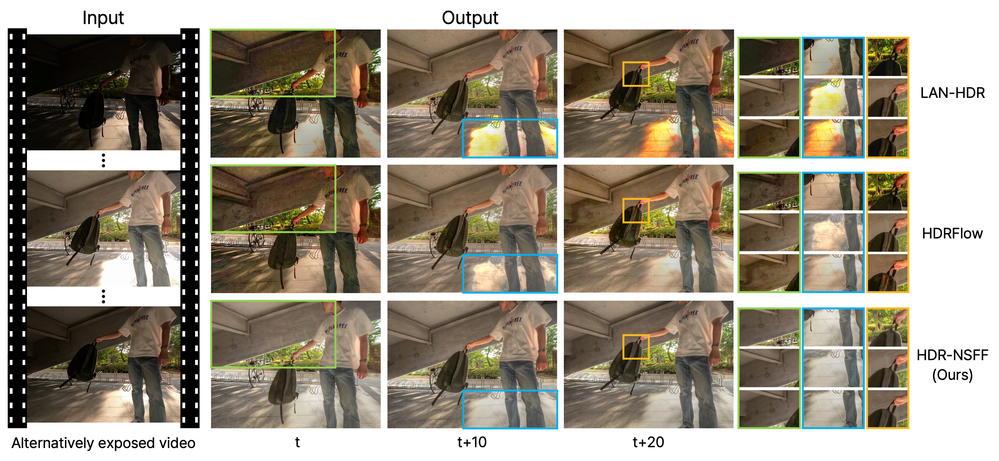
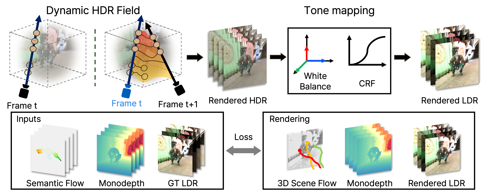
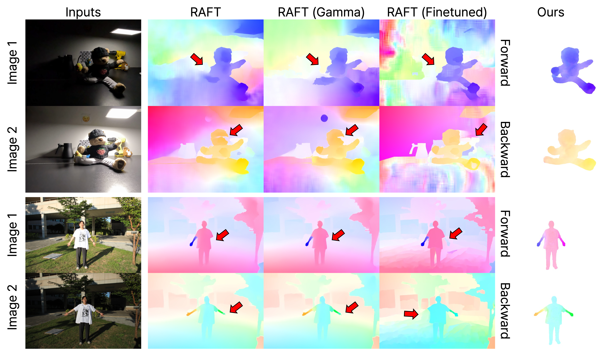
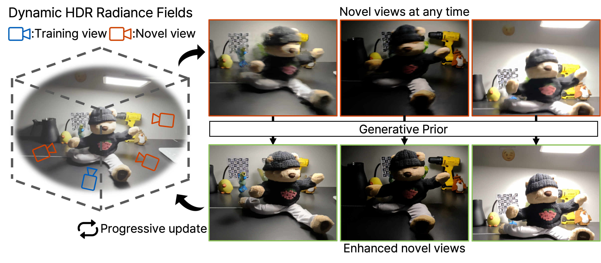

Given an alternating-exposure monocular video captured with exposure bracketing, HDR-NSFF reconstructs a dynamic HDR radiance field enabling temporally consistent HDR slow-motion rendering.
Bear
Input
Alternating-exposure video (DSLR Bracketing)
Output
HDR slow-motion rendering
Leaf
Input
Alternating-exposure video (DSLR Bracketing)
Output
HDR slow-motion rendering
Robin
Input
Alternating-exposure video (DSLR Bracketing)
Output
HDR slow-motion rendering
Radiance of real-world scenes typically spans a much wider dynamic range than what standard cameras can capture. While conventional HDR methods merge alternating-exposure frames, these approaches are inherently constrained to 2D pixel-level alignment, often leading to ghosting artifacts and temporal inconsistency in dynamic scenes. To address these limitations, we present HDR-NSFF, a paradigm shift from 2D-based merging to 4D spatio-temporal modeling. Our framework reconstructs dynamic HDR radiance fields from alternating-exposure monocular videos by representing the scene as a continuous function of space and time, and is compatible with both neural radiance field and 4D Gaussian Splatting (4DGS) based dynamic representations. This unified end-to-end pipeline explicitly models HDR radiance, 3D scene flow, geometry, and tone-mapping, ensuring physical plausibility and global coherence. We further enhance robustness by (i) extending semantic-based optical flow with DINO features to achieve exposure-invariant motion estimation, and (ii) incorporating a generative prior as a regularizer to compensate for limited observation in monocular captures and saturation-induced information loss. To evaluate HDR space-time view synthesis, we present the first real-world HDR-GoPro dataset specifically designed for dynamic HDR scenes. Experiments demonstrate that HDR-NSFF recovers fine radiance details and coherent dynamics even under challenging exposure variations, thereby achieving state-of-the-art performance in novel space-time view synthesis.
Conventional HDR video methods align and fuse alternating-exposure frames using 2D optical flow, causing color drift and geometric flickering under large or complex motions. HDR-NSFF reconstructs a unified 4D spatio-temporal HDR radiance field, ensuring global consistency across the entire video.
| HDR Video (2D) | Ours (4D) | |
|---|---|---|
| Motion modeling | Pixel-level | 3D scene flow |
| Geometry | None | Explicit depth |
| Temporal scope | 3–7 frames | Entire video |
| Output | One HDR frame | HDR novel view & time synthesis |
Given an alternating-exposure video, HDR video baselines (LAN-HDR, HDRFlow) fail to produce temporally consistent results due to 2D pixel-level alignment. Our model ensures temporal coherence and recovers valid information in saturated regions.

Comparison of HDR video reconstruction on training views. Given alternating-exposure video, HDR video reconstruction baselines (LAN-HDR, HDRFlow) fail to produce consistent results, while our model ensures temporal coherence and recovers valid information in saturated regions.
HDR-NSFF reconstructs dynamic HDR radiance fields by jointly optimizing HDR radiance, 3D scene flow, geometry, and tone-mapping from alternating-exposure monocular videos. Our framework introduces three core components:

Overall pipeline. HDR-NSFF takes an alternating-exposure monocular video as input and estimates 3D scene flow for sampled points along each ray. Neighboring frames are warped to render the HDR radiance at the target frame, which is tone-mapped to LDR via a learnable white-balance and camera-response function (CRF) module. All components are jointly optimized end-to-end.
A learnable piecewise CRF with per-channel white balance maps rendered HDR radiance to LDR observations. Smoothness regularization ensures physically plausible CRF curves even under extreme exposure variations.
Standard optical flow degrades under alternating exposures. We leverage DINOv2 semantic features, which are invariant to photometric changes, to produce reliable exposure-robust motion estimates via DINO-Tracker.
Monocular capture and saturated pixels cause information loss. A generative prior periodically synthesizes enhanced novel views as pseudo-labels, bootstrapping the 4D reconstruction into a pseudo-multi-view problem.

Standard optical flow (RAFT) fails under alternating exposures — even with gamma correction or fine-tuning on synthetic data. Our semantic-based approach using DINOv2 features achieves accurate motion estimation regardless of exposure variation.

Generative prior pipeline. Unseen novel views are first rendered, then refined via the generative prior to restore details in regions with broken correspondences. These enhanced views serve as pseudo-labels for progressive optimization, mitigating saturation and limited-view issues.
HDR-NSFF reconstructs fine radiance details across a range of scenes with complex dynamics.
Big Jump
Jumping Jack
Pointing Walk
Side Walk
Tube Toss
HDR-HexPlane lacks explicit motion modeling, limiting its ability to represent complex dynamics. Our method produces more accurate radiance, geometry, and motion representations across all scenes.
Big Jump
HDR-HexPlane
Ours
Jumping Jack
HDR-HexPlane
Ours
Pointing Walk
HDR-HexPlane
Ours
We introduce the first real-world HDR benchmark for dynamic scene view synthesis. Nine synchronized GoPro Hero 13 Black cameras are arranged in a nearly parallel configuration, divided into three exposure groups (low, mid, high). An alternating-exposure monocular video is constructed from one camera per timestep; the remaining eight views serve as held-out evaluation references.
Sample sequences from our HDR-GoPro dataset at three exposure levels (low, mid, high), captured simultaneously by synchronized cameras.
| Method | Full Scene | Dynamic Only | ||||
|---|---|---|---|---|---|---|
| PSNR↑ | SSIM↑ | LPIPS↓ | PSNR↑ | SSIM↑ | LPIPS↓ | |
| NSFF | 18.02 | 0.6792 | 0.2061 | 17.59 | 0.5473 | 0.2529 |
| 4DGS | 20.94 | 0.7905 | 0.1541 | 17.83 | 0.5524 | 0.2230 |
| MotionGS | 14.61 | 0.3976 | 0.3617 | 12.33 | 0.2303 | 0.4696 |
| NeRF-WT | 29.70 | 0.9333 | 0.0598 | 19.25 | 0.6355 | 0.1770 |
| HDR-HexPlane | 20.70 | 0.6694 | 0.1917 | 20.55 | 0.6629 | 0.1716 |
| Ours (w/o DT) | 29.93 | 0.9364 | 0.0621 | 24.93 | 0.8068 | 0.1048 |
| Ours (w/o GP) | 32.66 | 0.9447 | 0.0557 | 25.65 | 0.8205 | 0.1012 |
| Ours | 32.63 | 0.9444 | 0.0554 | 25.50 | 0.9208 | 0.0972 |
| Method | Full Scene | Dynamic Only | ||||
|---|---|---|---|---|---|---|
| PSNR↑ | SSIM↑ | LPIPS↓ | PSNR↑ | SSIM↑ | LPIPS↓ | |
| NSFF | 15.98 | 0.6457 | 0.1388 | 16.04 | 0.5697 | 0.1527 |
| NeRF-WT | 31.10 | 0.9366 | 0.0342 | 21.50 | 0.7490 | 0.0895 |
| HDR-HexPlane | 29.95 | 0.9055 | 0.0527 | 23.87 | 0.7999 | 0.1071 |
| Ours | 35.07 | 0.9465 | 0.0483 | 27.19 | 0.8836 | 0.0576 |
There are several concurrent works that also aim to reconstruct HDR-4D:
@inproceedings{dong-yeon2026hdr-nsff,
title = {HDR-NSFF: High Dynamic Range Neural Scene Flow Fields},
author = {Dong-Yeon, Shin and Jun-Seong, Kim and Byung-Ki, Kwon and Oh, Tae-Hyun},
booktitle = {International Conference on Learning Representations (ICLR)},
year = {2026}
}